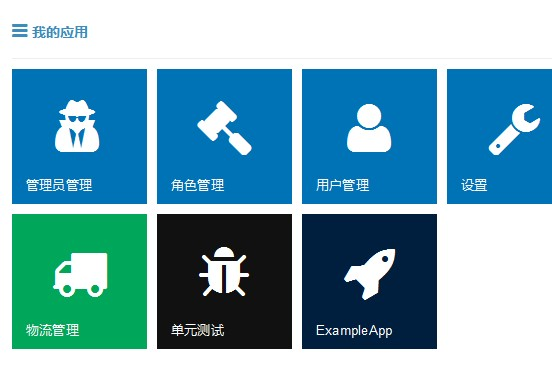
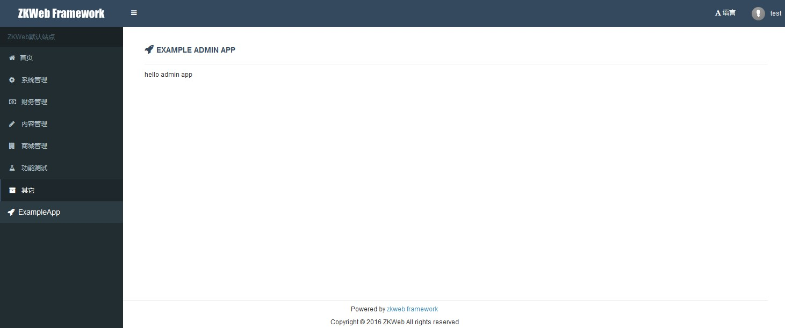

管理员 (Common.Admin)
插件包含了用户和管理员所需的数据表，和最基础的后台管理页面。
支持快速开发使用的自动构建后台CRUD页面等功能。
数据表
- 用户 (User)
- 角色 (UserRole)
一个用户可以对应多个角色，用户有用户类型，可以是普通用户或管理员或合作伙伴。
用户注册和登陆
插件包含了用户注册和登陆页面，地址是
- 注册页面 /user/reg
- 登陆页面 /user/login
需要修改样式时可以重载相关的模板文件。
权限
插件支持权限管理，网站中的权限由IPrivilegesProvider提供。
权限是一个字符串，格式推荐是Group:Name，例如AdminManage:View。
很多插件支持自动生成权限提供器，例如构建后台CRUD页面时会自动生成增删查改权限。
需要检查权限时可以使用PrivilegeManager
var privilegeManager = Application.Ioc.Resolve<PrivilegeManager>();
privilegeManager.Check(UserTypesGroup.Admin, "AdminManage:Edit");
后台页面
插件提供了默认的后台页面，地址是/admin，主题使用了AdminLTE。
网站创建后第一个登陆到后台的用户将会成为超级管理员。
后台包含一系列的后台功能，一个功能一个图标（如果自己替换模板页，可以换成别的形式）。

添加后台功能
添加后台功能可以继承AdminApp类实现。
添加Example\src\AdminApps\ExampleApp.cs，内容如下
/// <summary>
/// 示例的后台应用
/// </summary>
[ExportMany]
public class ExampleApp : SimpleAdminAppBuilder {
// Name和Url必须提供
public override string Name { get { return "ExampleApp"; } }
public override string Url { get { return "/admin/example_app"; } }
// 可选，如果需要指定图标颜色和内容
public override string TileClass { get { return "tile bg-navy"; } }
public override string IconClass { get { return "fa fa-rocket"; } }
// 可选，默认只要求管理员不要求指定权限
public override UserTypes[] AllowedUserTypes { get { return UserTypesGroup.Admin; } }
public override string[] RequiredPrivileges { get { return new[] { "ExampleApp:View" }; } }
protected override IActionResult Action() {
return new TemplateResult("example/example_admin_app.html");
}
}
添加Example\templates\example\example_admin_app.html，内容如下
{% use_title "Example Admin App" -%}
{% include common.admin/header.html %}
<div class="portlet-title">
<div class="caption">
<i class="fa fa-rocket"></i>
<span class="caption-subject">{{ "Example Admin App" | trans }}</span>
</div>
</div>
<div class="portlet-body">
hello admin app
</div>
{% include common.admin/footer.html %}
刷新后台可以看到多出了ExampleApp的图标

进入后会显示Action返回的内容

自动构建后台CRUD页面
插件提供了根据数据库中的数据快速构建后台CRUD页面的功能，构建时需要使用AdminAppBuilder。
添加Example\src\AdminApps\ExampleCRUDApp.cs，内容如下
/// <summary>
/// 示例的增删查改应用
/// </summary>
[ExportMany]
public class ExampleCRUDApp : AdminAppBuilder<ExampleTable> {
// Name和Url必须提供
public override string Name { get { return "ExampleCRUDApp"; } }
public override string Url { get { return "/admin/example_crud_app"; } }
// 可选，如果需要指定图标颜色和内容
public override string TileClass { get { return "tile bg-navy"; } }
public override string IconClass { get { return "fa fa-rocket"; } }
// 权限一般不需要手动指定，会根据名称生成"查看","修改","删除","永久删除"权限
// 获取添加和编辑使用的表单
protected override IModelFormBuilder GetAddForm() { return new Form(); }
protected override IModelFormBuilder GetEditForm() { return new Form(); }
// 获取搜索列表使用的回调
protected override IAjaxTableCallback<ExampleTable> GetTableCallback() { return new TableCallback(); }
/// <summary>
/// 搜索列表使用的表格回调
/// </summary>
public class TableCallback : IAjaxTableCallback<ExampleTable> {
public void OnBuildTable(AjaxTableBuilder table, AjaxTableSearchBarBuilder searchBar) {
table.StandardSetupForCrudPage<ExampleCRUDApp>(); // 设置表格
searchBar.StandardSetupForCrudPage<ExampleCRUDApp>("Name"); // 设置搜索栏
}
public void OnQuery(
AjaxTableSearchRequest request, DatabaseContext context, ref IQueryable<ExampleTable> query) {
query = query.FilterByRecycleBin(request); // 按回收站过滤
if (!string.IsNullOrEmpty(request.Keyword)) {
query = query.Where(q => q.Name.Contains(request.Keyword)); // 按关键词过滤
}
}
public void OnSort(
AjaxTableSearchRequest request, DatabaseContext context, ref IQueryable<ExampleTable> query) {
query = query.OrderByDescending(q => q.Id); // 按Id倒序排列
}
public void OnSelect(
AjaxTableSearchRequest request, List<EntityToTableRow<ExampleTable>> pairs) {
foreach (var pair in pairs) {
pair.Row["Id"] = pair.Entity.Id; // 选择Id
pair.Row["Name"] = pair.Entity.Name; // 选择名称
pair.Row["CreateTime"] = pair.Entity.CreateTime.ToClientTimeString(); // 选择创建时间
pair.Row["Deleted"] = pair.Entity.Deleted ? EnumDeleted.Deleted : EnumDeleted.None; // 选择删除状态
}
}
public void OnResponse(
AjaxTableSearchRequest request, AjaxTableSearchResponse response) {
response.Columns.AddIdColumn("Id").StandardSetupForCrudPage<ExampleCRUDApp>(request); // Id列
response.Columns.AddNoColumn(); // 序号列，页序号*页数量+数据位置(从1开始)
response.Columns.AddMemberColumn("Name", "45%"); // 名称列
response.Columns.AddMemberColumn("CreateTime"); // 添加时间列
response.Columns.AddEnumLabelColumn("Deleted", typeof(EnumDeleted)); // 删除状态列
response.Columns.AddActionColumn().StandardSetupForCrudPage<ExampleCRUDApp>(request); // 操作列
}
}
/// <summary>
/// 添加和编辑使用的表单
/// </summary>
public class Form : DataEditFormBuilder<ExampleTable, Form> {
[Required]
[StringLength(100)]
[TextBoxField("Name", "Please enter name")]
public string Name { get; set; }
protected override void OnBind(DatabaseContext context, ExampleTable bindFrom) {
Name = bindFrom.Name; // 绑定名称
}
protected override object OnSubmit(DatabaseContext context, ExampleTable saveTo) {
saveTo.Name = Name; // 设置名称
if (saveTo.Id <= 0) {
saveTo.CreateTime = DateTime.UtcNow; // 设置创建时间
}
return new {
message = new T("Saved successfully"), // 显示消息
script = ScriptStrings.AjaxtableUpdatedAndCloseModal // 关闭模态框并刷新列表
};
}
}
}
效果如图

自动生成的权限如图